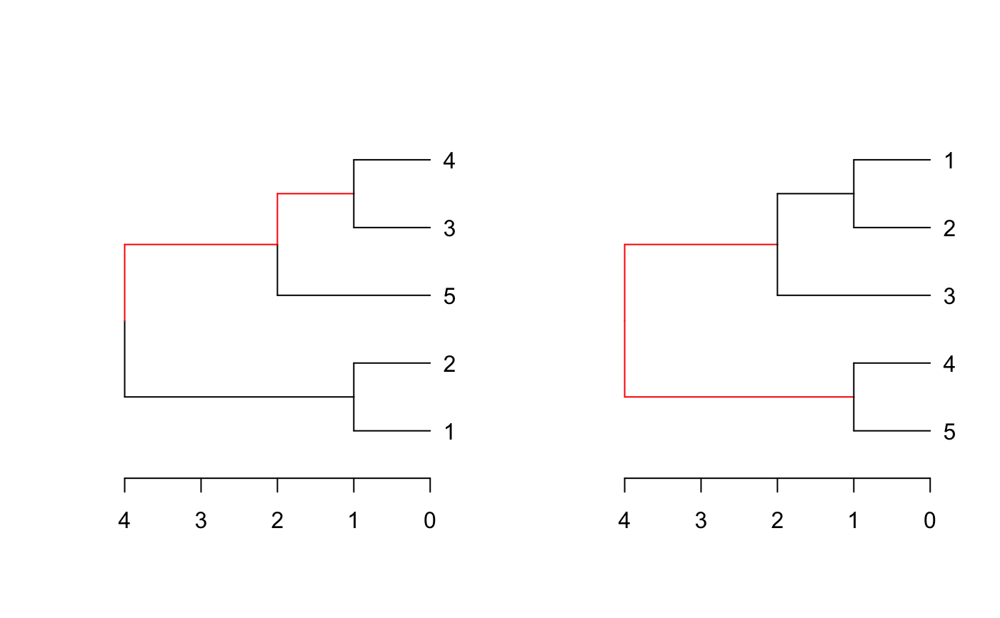
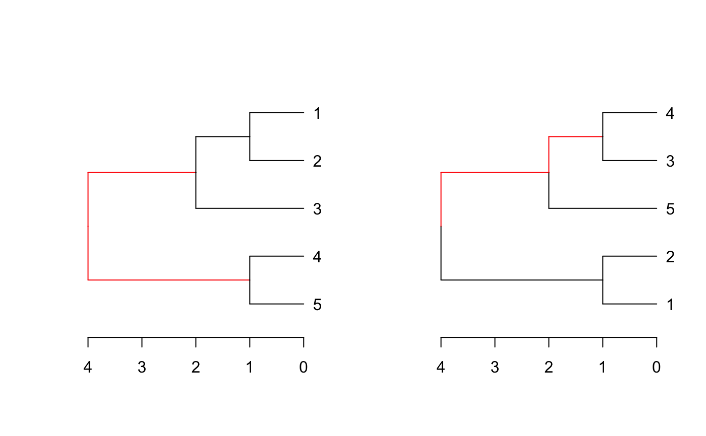
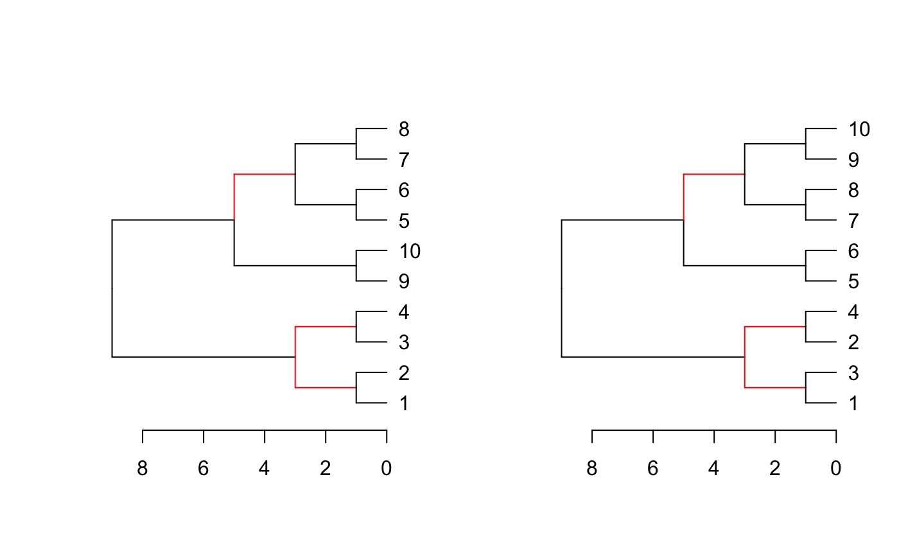

R/distinct_edges.R
dend_diff.RdPlots two trees side by side, highlighting edges unique to each tree in red.
dend_diff(dend, ...) # S3 method for dendrogram dend_diff(dend, dend2, horiz = TRUE, ...) # S3 method for dendlist dend_diff(dend, ..., which = c(1L, 2L))
| dend | a dendrogram or dendlist to compre with |
|---|---|
| ... | passed to plot.dendrogram |
| dend2 | a dendrogram to compare with |
| horiz | logical (TRUE) indicating if the dendrogram should be drawn horizontally or not. |
| which | an integer vector indicating, in the case "dend" is a dendlist, on which of the trees should the modification be performed. If missing - the change will be performed on all of objects in the dendlist. |
A dendrogram implementation for phylo.diff from the distory package
Invisible dendlist of both trees.
distinct_edges, highlight_distinct_edges, dist.dendlist, tanglegram assign_values_to_branches_edgePar, distinct.edges,
dend1 <- 1:10 %>% dist() %>% hclust() %>% as.dendrogram() dend2 <- dend1 %>% set("labels", c(1, 3, 2, 4, 5:10)) dend_diff(dend1, dend2)